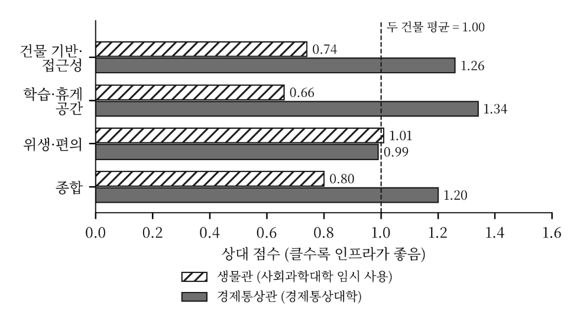
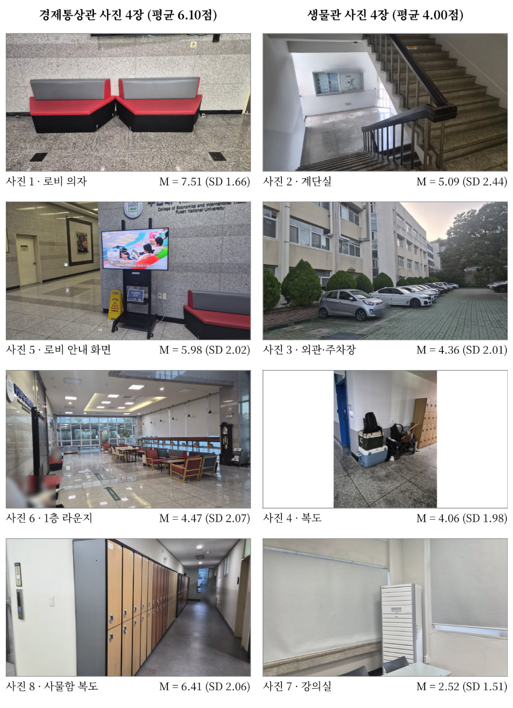
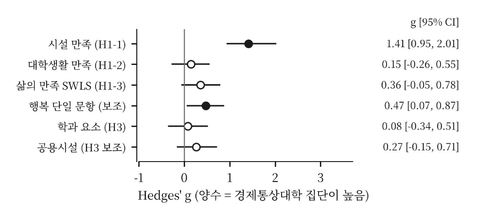
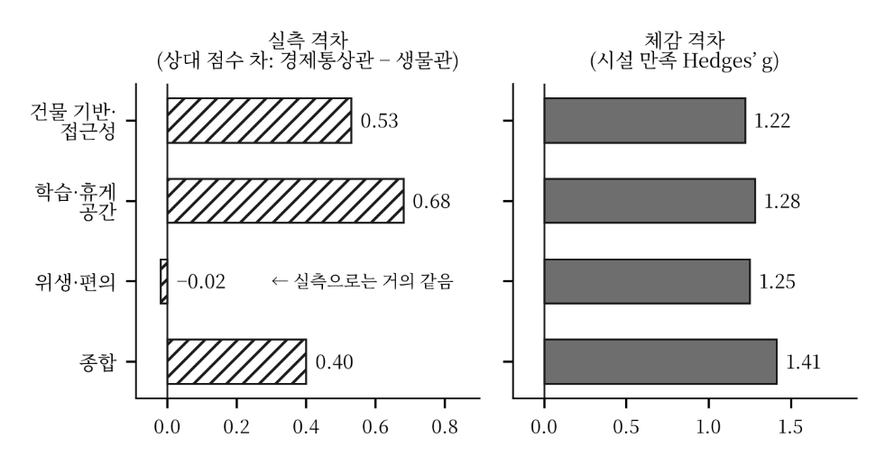
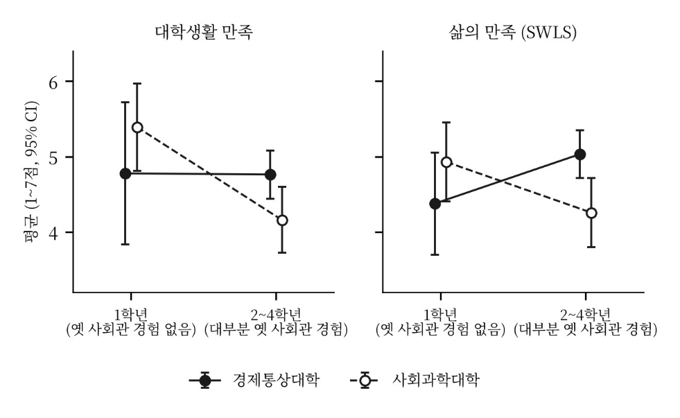
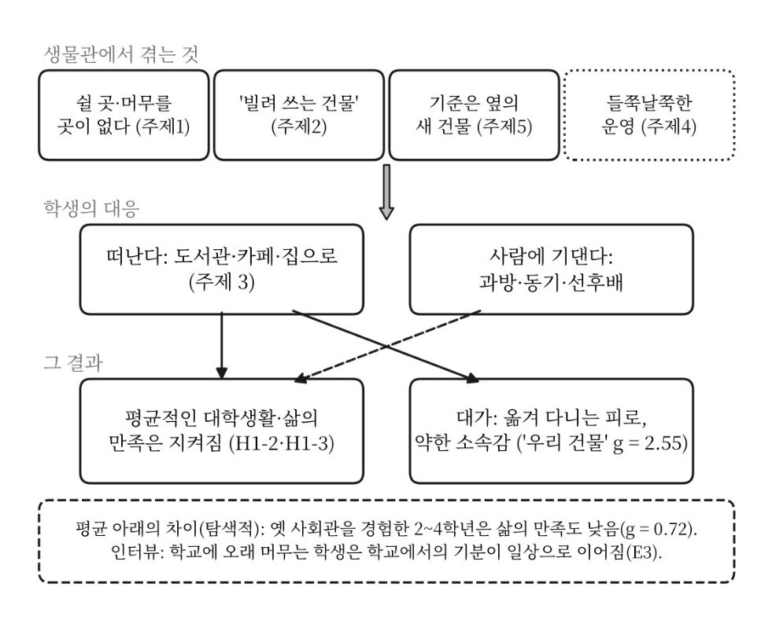
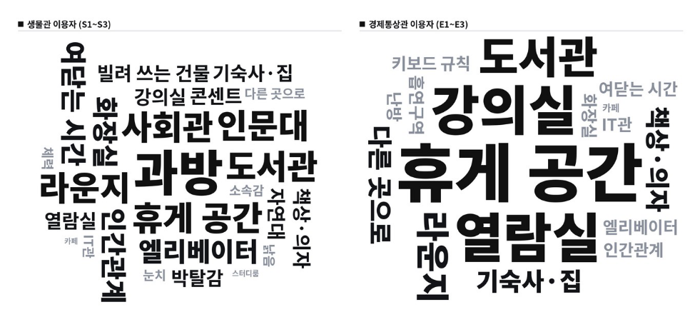

부산대학교 사회학과 · 학술제 2026
단과대학 건물 인프라 차이와 학생의 만족도, 삶의 질
생물관과 경제통상관을 중심으로 · 실측 17지표 · 설문 88명 · 인터뷰 6명
“We shape our buildings, and afterwards our buildings shape us.” Winston Churchill · 하원 연설, 1943
프롤로그
부산대학교 캠퍼스, 2026년 가을.
프롤로그
사회과학대학이 쓰는 건물
1980년 준공
생물관 · 46년째 · 엘리베이터 1대
사회관 재건축 기간 동안 다른 단과대학 건물을
임시로 빌려 쓰고 있습니다.
경제통상대학이 소유한 건물
2013년 준공
경제통상관 · 13년째 · 엘리베이터 3대
2013년 준공된, 자기 단과대학의 새 건물입니다.
같은 사회과학 계열인데, 어느 단과대학에 속하느냐에 따라 매일 마주하는 건물이 이렇게 다릅니다.
질문
건물 =
직접 잰 조건.
17개 지표 · 3개 영역
영향 =
시설 만족 → 대학생활 만족
→ 삶의 질 (SWLS)
비교 =
생물관 vs 경제통상관.
같은 계열의 자연실험
방법
17
건물 실측 지표
88
설문 응답자
6
1:1 인터뷰
설문 응답을 보기 전에 가설과 분석 방법을 문서로 고정했습니다. — 10월 6일 사전등록. 이후 바꾼 건 날짜와 이유까지 전부 기록해 뒀습니다.
Welch t검정 · Hedges’ g · 부트스트랩 5,000회 95% CI · Mann–Whitney U 교차 확인
발표 전에
발견 1 — 격차는 실재합니다
0.80 vs 1.20
종합 상대 점수 — 1.00이 두 건물의 평균입니다.
좌석당 콘센트 0.05 vs 0.14개
층당 휴게 좌석 1.8 vs 6.2개
엘리베이터 1 vs 3대

원고 <Figure 2> — 영역별 인프라 상대 점수. 14개 지표 모두 경통관이 높았고, 하나씩 빼서 다시 계산해도 결론은 그대로였습니다.
발견 1 — 격차는 실재합니다
시설 만족도 (1~7점)
3.50 vs 5.04
Hedges’ g = 1.41 p < .001
경통 5.04 (SD 1.20) · 사회 3.50 (SD 0.97) · n = 40 / 48
블라인드 사진 평정 (0~10점)
4.00 vs 6.10
dz = 1.84
건물 이름을 가린 채 사진 8장 제시 — 87명 중 85명이 경통관 공간을 더 높게 봤습니다.
생물관을 낮게 본 건 사회대생만의 불만이 아니었습니다. 생물관에서 수업 듣는 경통대생도 똑같이 낮게 봤어요.
블라인드 테스트

원고 <Figure A2> — 설문에서 건물 이름 없이 보여준 사진 8장. 1·5·6·8번이 경통관, 2·3·4·7번이 생물관인데, 응답자에게는 이 사실을 알려주지 않았습니다.
(이제부터가 진짜입니다)
발견 2 — 반전

원고 <Figure 3> — 가설 검정의 효과 크기(g)와 부트스트랩 95% CI. 채워진 점만 0을 포함하지 않습니다. 시설 만족은 확실히 다르고, 만족도 둘은 확실히 같습니다.
대학생활 만족 g = 0.15 (p = .482) · 삶의 만족 g = 0.36 (p = .171). 대학생활 만족은 동등성 검정에서 “실질적으로 같다”로 판정됐습니다. (p = .047)
발견 2 — 반전의 반전

원고 <Figure 4> — 실측 격차(왼쪽)와 체감 격차(오른쪽). 단위가 달라서 크기가 아니라 패턴을 봐야 합니다.
위생·편의는 측정상 거의 같았어요. (차이 −0.02) 그런데 체감은 g = 1.25. 학생은 콘센트 개수를 세는 게 아니라, 건물 전체를 느낍니다.
발견 3 — 그럼 어떻게 버텼을까요?
g = 0.51
수업 외 건물 체류 시간 · p = .019
경통 2.85 vs 사회 2.19 (1~5 범주)
“수업 시간에 맞춰서 들어가요, 바로 나와요.”E1 · 경통관 사용자
“그냥 학교가 불편하면, 학교 수업만 듣고 그냥 바로 집으로 가니까요.”E2 · 경통관 사용자
사회대생의 23%가 공강에 집이나 기숙사로 갑니다. 불편한 건물은 수리 요청이 아니라 이탈을 부릅니다. — 평균 만족도가 비슷했던 이유가 여기 있습니다.
발견 4 — 평균 아래의 진실
사회대의 삶의 만족 평균 4.50 — 그 안에 1학년 봉 (4.93)과 2~4학년 봉 (4.26)이 겹쳐 있습니다. 봉우리가 둘이면 요약하지 말고, 쪼개 봐야 합니다.
발견 4 — 쪼개 보면

원고 <Figure 5> — 학년별 대학생활·삶의 만족 (평균 ± 95% CI). 사회대 1학년 17명은 모두 옛 사회관 수업 경험이 없고, 2~4학년 31명 중 29명은 경험이 있습니다.
2~4학년 삶의 만족 g = 0.72 (p = .006) · 대학생활 만족 g = 0.57 (p = .027). 1학년은 차이가 없습니다. 비교할 기준이 없으면, 박탈감도 없습니다.
발견 5 — 진짜 차이
g = 2.55
‘이 건물이 우리 건물이라는 느낌’
경통 4.13 vs 사회 1.88 (7점)
연구 전체에서 가장 큰 격차
시설 만족 차이의 93%가 소속감을 거쳐서 생깁니다. 소속감이 같아지면 시설 만족 차이도 사라집니다. 시설만 고쳐서는 이 격차를 못 메웁니다.
종합

원고 <Figure 6> — 질적·양적 결과의 요약 모델.
① 머무는 곳을 바꿨습니다. (체류 g = 0.51)
② 소속감을 바꿨습니다. (g = 2.55, 매개 93%)
③ 비교 기준을 바꿨습니다. (옛 사회관 기억, g = 0.72)
건물은 삶의 평균을 바꾸기보다, 어디에 머물고, 어디에 속한다고 느끼고, 무엇과 비교하는지를 바꿨습니다.
인터뷰

원고 <Figure A1> — 인터뷰에서 자주 나온 말. 클수록 여러 참여자가 반복해서 꺼낸 말입니다.
① 쉴 곳, 머물 곳이 없다
② 빌려 쓰는 건물이다
③ 불편하면 떠난다
④ 시설보다 운영이 문제다
⑤ 기준은 남의 새 건물이다
“굴러온 돌이 박힌 돌 빼는 느낌”S1 · 생물관 3점/10점, 근로 건물은 10점
“아직 빌려 쓰는 느낌이 강해요.”S3 · 사회대생만을 위한 공용 공간을 원함
“문득 경통관을 보면 박탈감을 느껴요.”S2 · 처음 사회학과 학생이 된 날의 기억은 옛 사회관
결론
새 사회관 희망 시설 1·2위 (사회대 n=48)
50%
조용한 개인 자습실
46%
누워서 쉴 수 있는 휴게실
실측 · 설문 · 인터뷰가 같은 곳을 가리킵니다. 누워서 쉴 수 있는 휴게실(층당 1.8 vs 6.2개), 조용한 개인 자습실(46~50%). 그리고 개방 시간과 이용 규칙은 처음부터 게시하고, 학생 의견을 들을 경로를 만들어야 합니다. 라운지 42% · 화장실·비데 42% · 콘센트 35%
마무리
1.88 → ?
지금 생물관에서 ‘우리 건물이라는 느낌’은 7점 만점에 1.88점입니다.
새 사회관이 준공되면, 같은 질문을 다시 던질게요.
“We shape our buildings, and afterwards our buildings shape us.” Winston Churchill · 1943
건물은 학생을 만드는가 · 부산대학교 사회학과 학술제 2026
모든 수치와 그래프는 학술제_최종원고_v8 보고값 · 예시 차트는 화면에 표기
건물은 학생을 만드는가 · 부산대 사회학과 학술제
01 / 20